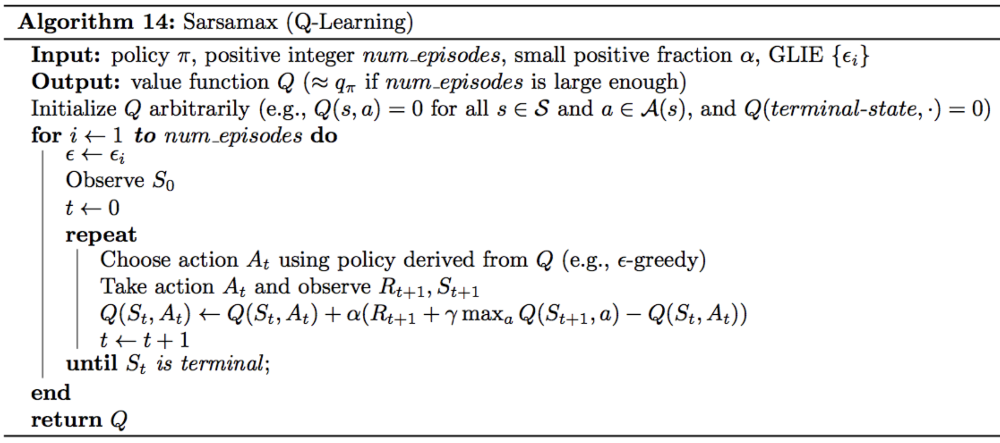

Introduction
In this lesson, you'll learn about Temporal Difference or TD Learning. In order to understand TD learning, it'll help to discuss what exactly it would mean to solve this problem of learning from interaction. The solution will come many years into the future, when we've developed artificially intelligent agents that interact with the world much like the way humans do.
In order to accomplish this, the agents would need to learn from the kind of online streaming data that we learn from everyday. Real life is far from an episodic task and it requires its agents to constantly make decisions all day everyday. We get no break with our interaction with the world.
Remember that Monte Carlo learning needed those breaks, it needed the episode to end so that the return could be calculated, and then used as an estimate for the action values.
So, we'll need to come up with something else if we want to deal with more realistic learning in a real world setting. So, the main idea is this: if an agent is playing chess, instead of waiting until the end of an episode to see if it's won the game or not, it will at every move be able to estimate the probability that it's winning the game, or a self-driving car at every turn will be able to estimate if it's likely to crash, and if necessary amend its strategy to avoid disaster. To emphasize, the Monte Carlo approach would have this car crash every time it wants to learn anything, and this is too expensive and also quite dangerous.
TD learning will solve these problems. Instead of waiting to update values when the interaction ends, it will amend its predictions at every step, and you'll be able to use it to solve both continuous and episodic tasks. It's also widely used in RL and lies at the heart of many state-of-the-art algorithms that you see in the news today.
See the video here.
This lesson covers material in Chapter 6 (especially 6.1-6.6) of the textbook.
Review: MC Control Methods
In the previous lesson, you learned about the control problem in reinforcement learning and implemented some Monte Carlo (MC) control methods.
Control Problem: Estimate the optimal policy.
In this lesson, you will learn several techniques for Temporal-Difference (TD) control.
Review
Before continuing, please review Constant-alpha MC Control from the previous lesson.
Remember that the constant-\alphaα MC control algorithm alternates between policy evaluation and policy improvement steps to recover the optimal policy .


TD Control: Sarsa
Monte Carlo (MC) control methods require us to complete an entire episode of interaction before updating the Q-table. Temporal Difference (TD) methods will instead update the Q-table after every time step.
Let's consider the gridworld example again. We'll discuss an algorithm that doesn't need us to complete an entire episode before updating the Q-table. Instead, we'll update the Q-table at the same time as the episode is unfolding. In particular, we'll only need this very small time window of information (figure below) to do an update.

The current estimate for the value of selecting action "right" in state (1) is +6 (pulled from Q-Table). So, what about the alternative estimate?
In the Monte Carlo case, we wainted until the end of the episode, and added up all the rewards that we got along the way.
But, if we're working with just the small time window, we don't have access to what happens at those later time steps. So, how might we form an alternative estimate with this limited information?
Here is an idea,
After we got the reward of -1, we ended up in state (2) and selected action "right". Our Q-Table already has an estimate for the return that's likely to follow from that point onward. It's just the estimated action-value for state (2) and action "right". So, our alternative estimate can just be -1+8=7, which is the value of next state-action pair.
Then, like the Monte Carlo case, we can use this alternative estimate to update the Q-Table by just moving the of "+6" a little bit closer to "+7". So, let's say that we move this value to "6.2".

Then, at the next time step, we repeat the same process where we update the entry in the Q-Table for state (2) and action "right" by just using the alternative estimate. The alternative estimate is just the reward we received plus the currently estimated value of the next state-action pair. So, in this case we'll move the value of "8" a little bit closer to "9" which will yield a new value like "8.2".
See the video here.
Sarsa or Sarsa(0)
We began this lesson by reviewing Monte Carlo Control. This was the corresponding update equation:
In order to use it we sample a complete episode. Then, we look up the current estimate in the Q-Table and compare it to the return that we actually experienced after visiting the state-action pair. We use that new return to make our Q-Table a little more accurate.
But then you learned how to change the update equation to only use a very small time window of information. Instead of using the return as an alternative estimate for updating the Q-Table, we use the sum of the immediate reward and the discounted value of the next state-action pair.
In the gridworld example, we assumed but this need not be the case for a general MDP. This will yield a new control method that we can use for both continuous and episodic tasks.
With the exception of this new update step, it's identical to what we did in the Monte Carlo case. In particular, we'll use Epsilon-greedy policy to select actions at every time step. The only real difference is that we update the Q-Table at every time step instead of waiting until the end of the episode.
As long as we specify appropriate values for Epsilon, the algorithm is guaranteed to converge to the optimal policy.
The name of this algorithm is Sarsa(0) also known as Sarsa for short. The name comes from the fact that each action-value update uses a (state-action reward, next state, next action) tuple of interaction.

See the video here.
Pseudocode

TD Control: Q-Learning
Please watch the video below to learn about Q-Learning (or Sarsamax), a second method for TD control.
So far, you already have one algorithm for temporal difference control. Remember that in Sarsa algorithm:
- We begin by initializing all action values to zero in constructing the corresponding Epsilon-greedy policy.
- Then, the agent begins interacting with the environment and receives the first state.
- Next, it uses the policy to choose its action. Immediately after it, it receives a reward and next state.
- Then, the agent again uses the same policy to pick the next action.
- After choosing that action, it updates the action-value corresponding to the previous state-action pair and improves the policy to be Epsilon-greedy with respect to the most recent estimate of the action-values.

Now, we build off this algorithm to design another control algorithm that works slightly differently. This algorithm is called Sarsamax, but it's also known as Q-Learning.
We'll still begin with the same initial values for the action values and the policy. The agent receives the initial state, the first action is still chosen from the initial policy. But then, after receiving the reward and next state, we're going to do something else.
Namely, we'll update the policy before choosing the next action. Can you guess what action makes sense to put here?
In the Sarsa case, our update step was one step later and plugged in the action that was selected using Epsilon-greedy policy. For every step of the algorithm, it was the case that all of the actions was used for updating the action values, excatly coincide with those that were experienced by the agent. But, in general, this does not have to be the case. In particular, consider using the action from the greedy policy, instead of the Epsilon-greedy policy. This is in fact what Sarsamax or Q-Learning does.
We can rewrite the equation above to look like below, where we rely on on the fact that the greedy action corresponding to a state is just the one that maximizes the action values for that state.
So, what happens is after we update the action value for time step (0) using the greedy action, we then select A1, using the Epsilon-greedy policy corresponding to the action values we just updated. This continues when we received a reward and next state.Then, we do the same thing we did before where we update the value corresponding to S1 and A1 using the greedy action, then we select A2 using the corresponding Epsilon-greedy policy.
To understand precisely what this update stuff is doing, we'll compare it to the corresponding step in the Sarsa algorithm.
In Sarsa, the update step pushes the action values closer to evaluating whatever Epsilon-greedy policy is currently being followed by the agent. It's possible to show that Sarsamax instead, directly attempts to approximate the optimal value function at every time step.
See the video here.
Check out this (optional) research paper to read the proof that Q-Learning (or Sarsamax) converges.

TD Control: Expected Sarsa
Please watch the video below to learn about Expected Sarsa, a third method for TD control.
--> from the video
So far, you implemented Sarsa and Sarsamax and we'll now discuss one more option. This new option is called expected Sarsa and it closely resembles Sarsamax, where the only difference is in the update step for the action value.
Remember that Sarsamax or Q Learning took the maximum over all actions of all possible next state-action pairs. In other words, it chooses what value to place here by plugging in the one action that maximizes the action value estimate corresponding to the next state.
Expected Sarsa does something a bit different. It uses the expected value of the next state-action pair, where the expectation takes into account the probability that the agent selects each possible action from the next state.
Check out this (optional) research paper to learn more about Expected Sarsa.
Pseudocode

TD Control: Theory and Practice
Optimism
You have learned that for any TD control method, you must begin by initializing the values in the Q-table. It has been shown that initializing the estimates to large values can improve performance. For instance, if all of the possible rewards that can be received by the agent are negative, then initializing every estimate in the Q-table to zeros is a good technique. In this case, we refer to the initialized Q-table as optimistic, since the action-value estimates are guaranteed to be larger than the true action values.
OpenAI Gym: CliffWalkingEnv
In order to master the algorithms discussed in this lesson, you will write your own implementations in Python. While your code will be designed to work with any OpenAI Gym environment, you will test your code with the CliffWalking environment.

In the CliffWalking environment, the agent navigates a 4x12 gridworld. Please read about the cliff-walking task in Example 6.6 of the textbook. When you have finished, you can learn more about the environment in its corresponding GitHub file, by reading the commented block in the CliffWalkingEnv class. For clarity, we have also pasted the description of the environment below (note that the link below to the Sutton and Barto textbook may not work, and you're encouraged to use this link to access the textbook):
"""
This is a simple implementation of the Gridworld Cliff
reinforcement learning task.
Adapted from Example 6.6 from Reinforcement Learning: An Introduction
by Sutton and Barto:
http://people.inf.elte.hu/lorincz/Files/RL_2006/SuttonBook.pdf
With inspiration from:
https://github.com/dennybritz/reinforcement-learning/blob/master/lib/envs/cliff_walking.py
The board is a 4x12 matrix, with (using Numpy matrix indexing):
[3, 0] as the start at bottom-left
[3, 11] as the goal at bottom-right
[3, 1..10] as the cliff at bottom-center
Each time step incurs -1 reward, and stepping into the cliff incurs -100 reward
and a reset to the start. An episode terminates when the agent reaches the goal.
"""
Coding Exercise
Please check the Temporal Difference notebook.
Analyzing Performance
You've learned about three different TD control methods in this lesson. So, what do they have in common, and how are they different?
Similarities
All of the TD control methods we have examined (Sarsa, Sarsamax, Expected Sarsa) converge to the optimal action-value function q∗ (and so yield the optimal policy π∗) if:
- the value of
ϵdecays in accordance with the GLIE conditions, and - the step-size parameter
αis sufficiently small.
Differences
The differences between these algorithms are summarized below:
- Sarsa and Expected Sarsa are both on-policy TD control algorithms. In this case, the same (ϵ-greedy) policy that is evaluated and improved is also used to select actions.
- Sarsamax is an off-policy method, where the (greedy) policy that is evaluated and improved is different from the (ϵ-greedy) policy that is used to select actions.
- On-policy TD control methods (like Expected Sarsa and Sarsa) have better online performance than off-policy TD control methods (like Sarsamax).
- Expected Sarsa generally achieves better performance than Sarsa.
If you would like to learn more, you are encouraged to read Chapter 6 of the textbook (especially sections 6.4-6.6).
As an optional exercise to deepen your understanding, you are encouraged to reproduce Figure 6.4. (Note that this exercise is optional!)

The figure shows the performance of Sarsa and Q-learning on the cliff walking environment for constant ϵ=0.1. As described in the textbook, in this case,
- Q-learning achieves worse online performance (where the agent collects less reward on average in each episode), but learns the optimal policy, and
- Sarsa achieves better online performance, but learns a sub-optimal "safe" policy.
You should be able to reproduce the figure by making only small modifications to your existing code.
Summary

Temporal-Difference Methods
- Whereas Monte Carlo (MC) prediction methods must wait until the end of an episode to update the value function estimate, temporal-difference (TD) methods update the value function after every time step.
TD Control
- Sarsa(0) (or Sarsa) is an on-policy TD control method. It is guaranteed to converge to the optimal action-value function
q∗, as long as the step-size parameterαis sufficiently small andϵis chosen to satisfy the Greedy in the Limit with Infinite Exploration (GLIE) conditions. - Sarsamax (or Q-Learning) is an off-policy TD control method. It is guaranteed to converge to the optimal action value function
q∗, under the same conditions that guarantee convergence of the Sarsa control algorithm. - Expected Sarsa is an on-policy TD control method. It is guaranteed to converge to the optimal action value function
q∗, under the same conditions that guarantee convergence of Sarsa and Sarsamax.
Analyzing Performance
- On-policy TD control methods (like Expected Sarsa and Sarsa) have better online performance than off-policy TD control methods (like Q-learning).
- Expected Sarsa generally achieves better performance than Sarsa.